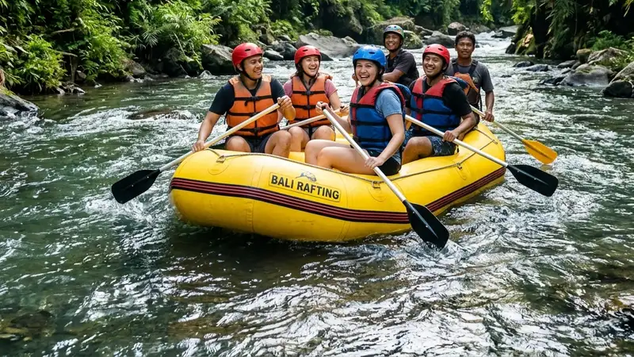

Manfaat outbound dan rafting perusahaan bagi tim kerja mencakup peningkatan komunikasi, penguatan kepercayaan antarkaryawan, pelatihan kepemimpinan situasional, dan pemulihan energi kerja secara bersamaan.
- Aktivitas rafting melatih kerja sama fisik langsung tanpa sekat jabatan struktural.
- Permainan darat dalam paket outbound melatih komunikasi dan pengambilan keputusan cepat.
- Tantangan fisik bersama membangun kepercayaan diri individu di lingkungan kerja.
- Kegiatan di alam terbuka membantu memulihkan energi dan menurunkan kejenuhan kerja.
- Manfaat ini dapat mendukung suasana kerja yang lebih terbuka dalam jangka menengah.
Apa Manfaat Outbound dan Rafting bagi Komunikasi Tim
Manfaat outbound dan rafting bagi komunikasi tim adalah melatih karyawan untuk mendengarkan aktif, menyampaikan instruksi dengan jelas, dan menyelesaikan masalah secara kolektif dalam waktu terbatas.
Saat mengikuti permainan darat, peserta dihadapkan pada situasi yang mengharuskan mereka berkoordinasi cepat dengan rekan satu kelompok, misalnya menyusun strategi dalam permainan estafet atau membagi tugas dalam simulasi pemecahan masalah. Kebiasaan berkomunikasi cepat dan jelas ini kemudian berlanjut ke sesi rafting, di mana instruksi dayung yang tidak jelas dapat langsung berdampak pada arah dan kestabilan perahu.
Karena dampaknya bersifat langsung dan terlihat, banyak fasilitator outbound menjadikan sesi rafting sebagai puncak pembelajaran komunikasi tim, karena kesalahan komunikasi kecil akan segera terasa akibatnya di atas sungai, sehingga peserta belajar lebih cepat dibanding hanya melalui simulasi di ruangan tertutup.
Bagaimana Rafting Melatih Kepercayaan dan Kepemimpinan Karyawan
Rafting melatih kepercayaan dan kepemimpinan karyawan karena setiap anggota tim harus mengandalkan rekan satu perahu tanpa memandang jabatan struktural di kantor demi keselamatan bersama menyusuri arus sungai.
Di atas perahu karet, peran kepemimpinan sering muncul secara alami dari peserta yang mampu tetap tenang dan memberi arahan jelas saat menghadapi jeram, terlepas dari posisi jabatannya di kantor. Situasi ini memberi kesempatan bagi karyawan di level non-manajerial untuk menunjukkan potensi kepemimpinan yang mungkin tidak terlihat dalam rutinitas kerja sehari-hari.
Kepercayaan antaranggota tim juga terbangun karena keselamatan satu perahu bergantung pada kekompakan gerakan seluruh anggotanya. Pengalaman berhasil melewati tantangan sungai bersama-sama umumnya meninggalkan kesan yang lebih kuat dibanding sekadar mengikuti pelatihan kepemimpinan berbasis teori di ruang kelas.
Apakah Outbound dan Rafting Berdampak pada Produktivitas Kerja
Outbound dan rafting dapat berdampak positif pada produktivitas kerja karena membantu memulihkan energi mental karyawan sehingga mereka kembali bekerja dengan fokus dan motivasi yang lebih baik.
Menurut kajian mengenai industri pertemuan dan pelatihan kelompok atau MICE, kegiatan semacam ini dinilai memiliki nilai ekonomi yang jauh lebih tinggi dibandingkan wisata rekreasi biasa karena melibatkan tujuan pengembangan sumber daya manusia yang terstruktur. Nilai tambah ini tidak hanya dirasakan perusahaan penyelenggara acara, tetapi juga mencerminkan bahwa investasi pada kegiatan pengembangan tim memiliki manfaat yang lebih luas dibanding sekadar rekreasi.
Pemulihan energi melalui aktivitas outdoor secara umum dapat menurunkan tingkat kelelahan kerja, sehingga karyawan lebih siap menghadapi target dan tenggat waktu begitu kembali ke rutinitas kantor. Efek ini biasanya lebih terasa apabila kegiatan dilakukan secara berkala, bukan hanya sekali dalam beberapa tahun.
Bagaimana Manfaat Ini Memengaruhi Retensi Karyawan
Manfaat outbound dan rafting dapat memengaruhi retensi karyawan karena kegiatan ini menunjukkan bahwa perusahaan peduli terhadap kesejahteraan dan pengembangan diri karyawan di luar aspek pekerjaan formal.
Karyawan yang merasa dihargai dan diberi kesempatan untuk berkembang, termasuk melalui kegiatan penyegaran tim, cenderung memiliki loyalitas yang lebih tinggi terhadap perusahaan. Selain itu, hubungan antarkaryawan yang lebih cair hasil dari kegiatan outbound dapat mengurangi gesekan kerja sehari-hari, yang pada gilirannya membantu menjaga suasana kerja tetap kondusif dalam jangka panjang.
FAQ
Apa manfaat utama outbound dan rafting bagi tim kerja?
Manfaat utamanya adalah peningkatan komunikasi, kepercayaan antaranggota, kepemimpinan situasional, dan pemulihan energi kerja karyawan.
Apakah manfaat outbound dan rafting bisa dirasakan setelah satu kali kegiatan?
Sebagian manfaat seperti pemulihan energi dapat terasa segera, namun manfaat jangka panjang seperti perubahan pola komunikasi tim umumnya membutuhkan kegiatan yang dilakukan secara berkala.
Apakah semua karyawan cocok mengikuti rafting sebagai bagian outbound?
Sebagian besar karyawan dengan kondisi fisik yang sehat umumnya cocok mengikuti rafting ringan hingga sedang, namun perusahaan tetap perlu memeriksa kondisi kesehatan peserta sebelum acara.
Arya
penulis artikel yang sudah berpengalaman di dalam dunia wisata outbound Batu Malang.